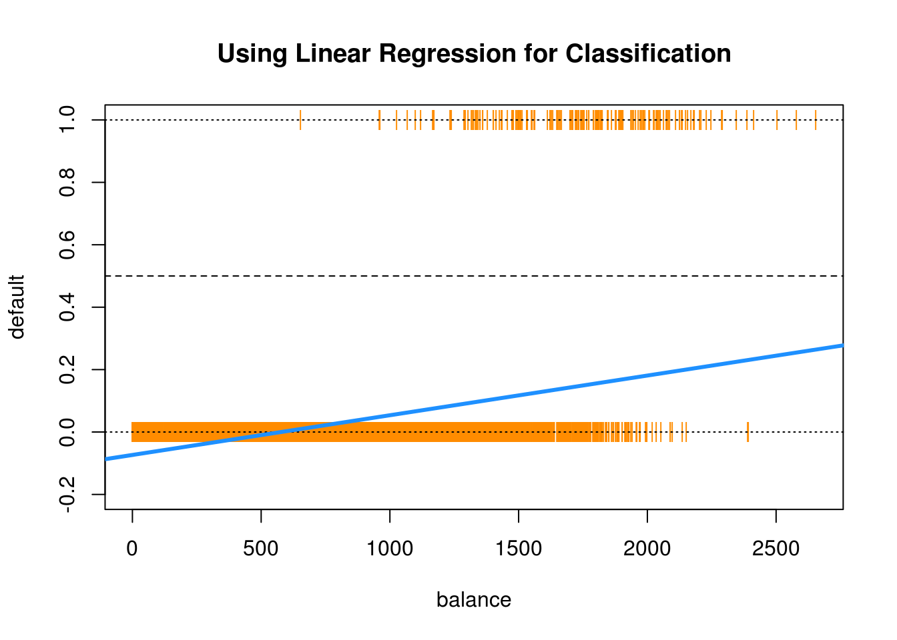
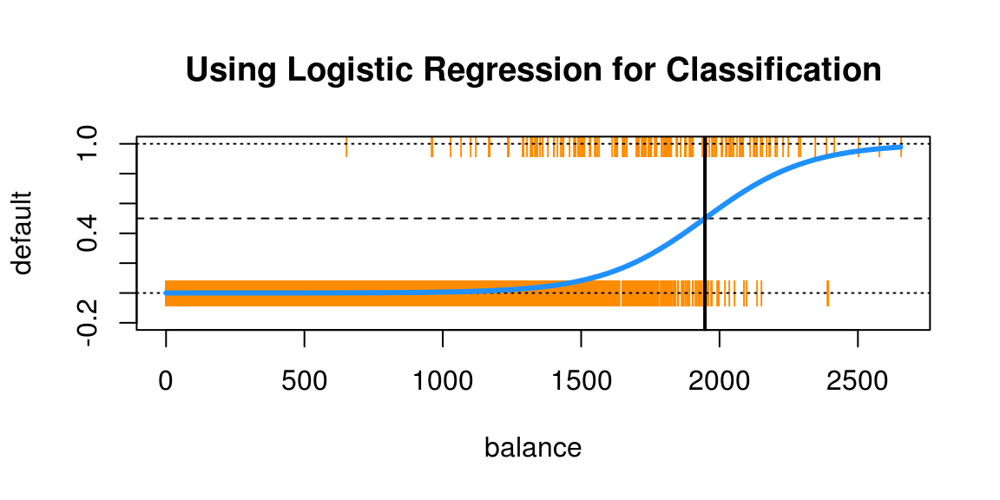
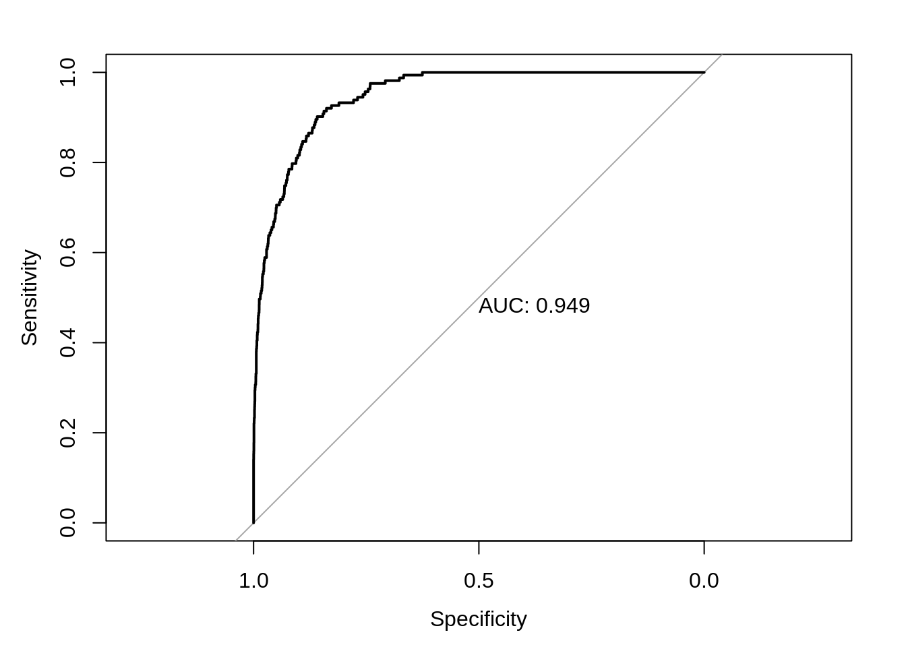

Chapter 10 Logistic Regression
In this chapter, we continue our discussion of classification. We introduce our first model for classification, logistic regression. To begin, we return to the Default dataset from the previous chapter.
library(ISLR)
library(tibble)
as_tibble(Default)## # A tibble: 10,000 x 4
## default student balance income
## <fctr> <fctr> <dbl> <dbl>
## 1 No No 729.5265 44361.625
## 2 No Yes 817.1804 12106.135
## 3 No No 1073.5492 31767.139
## 4 No No 529.2506 35704.494
## 5 No No 785.6559 38463.496
## 6 No Yes 919.5885 7491.559
## 7 No No 825.5133 24905.227
## 8 No Yes 808.6675 17600.451
## 9 No No 1161.0579 37468.529
## 10 No No 0.0000 29275.268
## # ... with 9,990 more rowsWe also repeat the test-train split from the previous chapter.
set.seed(42)
default_idx = sample(nrow(Default), 5000)
default_trn = Default[default_idx, ]
default_tst = Default[-default_idx, ]10.1 Linear Regression
Before moving on to logistic regression, why not plain, old, linear regression?
default_trn_lm = default_trn
default_tst_lm = default_tstSince linear regression expects a numeric response variable, we coerce the response to be numeric. (Notice that we also shift the results, as we require 0 and 1, not 1 and 2.) Notice we have also copied the dataset so that we can return the original data with factors later.
default_trn_lm$default = as.numeric(default_trn_lm$default) - 1
default_tst_lm$default = as.numeric(default_tst_lm$default) - 1Why would we think this should work? Recall that,
\[ \hat{\mathbb{E}}[Y \mid X = x] = X\hat{\beta}. \]
Since \(Y\) is limited to values of \(0\) and \(1\), we have
\[ \mathbb{E}[Y \mid X = x] = P(Y = 1 \mid X = x). \]
It would then seem reasonable that \(\mathbf{X}\hat{\beta}\) is a reasonable estimate of \(P(Y = 1 \mid X = x)\). We test this on the Default data.
model_lm = lm(default ~ balance, data = default_trn_lm)Everything seems to be working, until we plot the results.
plot(default ~ balance, data = default_trn_lm,
col = "darkorange", pch = "|", ylim = c(-0.2, 1),
main = "Using Linear Regression for Classification")
abline(h = 0, lty = 3)
abline(h = 1, lty = 3)
abline(h = 0.5, lty = 2)
abline(model_lm, lwd = 3, col = "dodgerblue")
Two issues arise. First, all of the predicted probabilities are below 0.5. That means, we would classify every observation as a "No". This is certainly possible, but not what we would expect.
all(predict(model_lm) < 0.5)## [1] TRUEThe next, and bigger issue, is predicted probabilities less than 0.
any(predict(model_lm) < 0)## [1] TRUE10.2 Bayes Classifier
Why are we using a predicted probability of 0.5 as the cutoff for classification? Recall, the Bayes Classifier, which minimizes the classification error:
\[ C^B(x) = \underset{g}{\mathrm{argmax}} \ P(Y = g \mid X = x) \]
So, in the binary classification problem, we will use predicted probabilities
\[ \hat{p}(x) = \hat{P}(Y = 1 \mid { X = x}) \]
and
\[ \hat{P}(Y = 0 \mid { X = x}) \]
and then classify to the larger of the two. We actually only need to consider a single probability, usually \(\hat{P}(Y = 1 \mid { X = x})\). Since we use it so often, we give it the shorthand notation, \(\hat{p}(x)\). Then the classifier is written,
\[ \hat{C}(x) = \begin{cases} 1 & \hat{p}(x) > 0.5 \\ 0 & \hat{p}(x) \leq 0.5 \end{cases} \]
This classifier is essentially estimating the Bayes Classifier, thus, is seeking to minimize classification errors.
10.3 Logistic Regression with glm()
To better estimate the probability
\[ p(x) = P(Y = 1 \mid {X = x}) \] we turn to logistic regression. The model is written
\[ \log\left(\frac{p(x)}{1 - p(x)}\right) = \beta_0 + \beta_1 x_1 + \beta_2 x_2 + \cdots + \beta_p x_p. \]
Rearranging, we see the probabilities can be written as
\[ p(x) = \frac{1}{1 + e^{-(\beta_0 + \beta_1 x_1 + \beta_2 x_2 + \cdots + \beta_p x_p)}} = \sigma(\beta_0 + \beta_1 x_1 + \beta_2 x_2 + \cdots + \beta_p x_p) \]
Notice, we use the sigmoid function as shorthand notation, which appears often in deep learning literature. It takes any real input, and outputs a number between 0 and 1. How useful! (This is actualy a particular sigmoid function called the logistic function, but since it is by far the most popular sigmoid function, often sigmoid function is used to refer to the logistic function)
\[ \sigma(x) = \frac{e^x}{1 + e^x} = \frac{1}{1 + e^{-x}} \]
The model is fit by numerically maximizing the likelihood, which we will let R take care of.
We start with a single predictor example, again using balance as our single predictor.
model_glm = glm(default ~ balance, data = default_trn, family = "binomial")Fitting this model looks very similar to fitting a simple linear regression. Instead of lm() we use glm(). The only other difference is the use of family = "binomial" which indicates that we have a two-class categorical response. Using glm() with family = "gaussian" would perform the usual linear regression.
First, we can obtain the fitted coefficients the same way we did with linear regression.
coef(model_glm)## (Intercept) balance
## -10.452182876 0.005367655The next thing we should understand is how the predict() function works with glm(). So, let’s look at some predictions.
head(predict(model_glm))## 9149 9370 2861 8302 6415 5189
## -6.9616496 -0.7089539 -4.8936916 -9.4123620 -9.0416096 -7.3600645By default, predict.glm() uses type = "link".
head(predict(model_glm, type = "link"))## 9149 9370 2861 8302 6415 5189
## -6.9616496 -0.7089539 -4.8936916 -9.4123620 -9.0416096 -7.3600645That is, R is returning
\[ \hat{\beta}_0 + \hat{\beta}_1 x_1 + \hat{\beta}_2 x_2 + \cdots + \hat{\beta}_p x_p \] for each observation.
Importantly, these are not predicted probabilities. To obtain the predicted probabilities
\[ \hat{p}(x) = \hat{P}(Y = 1 \mid X = x) \]
we need to use type = "response"
head(predict(model_glm, type = "response"))## 9149 9370 2861 8302 6415
## 9.466353e-04 3.298300e-01 7.437969e-03 8.170105e-05 1.183661e-04
## 5189
## 6.357530e-04Note that these are probabilities, not classifications. To obtain classifications, we will need to compare to the correct cutoff value with an ifelse() statement.
model_glm_pred = ifelse(predict(model_glm, type = "link") > 0, "Yes", "No")
# model_glm_pred = ifelse(predict(model_glm, type = "response") > 0.5, "Yes", "No")The line that is run is performing
\[ \hat{C}(x) = \begin{cases} 1 & \hat{f}(x) > 0 \\ 0 & \hat{f}(x) \leq 0 \end{cases} \]
where
\[ \hat{f}(x) =\hat{\beta}_0 + \hat{\beta}_1 x_1 + \hat{\beta}_2 x_2 + \cdots + \hat{\beta}_p x_p. \]
The commented line, which would give the same results, is performing
\[ \hat{C}(x) = \begin{cases} 1 & \hat{p}(x) > 0.5 \\ 0 & \hat{p}(x) \leq 0.5 \end{cases} \]
where
\[ \hat{p}(x) = \hat{P}(Y = 1 \mid X = x). \]
Once we have classifications, we can calculate metrics such as the trainging classification error rate.
calc_class_err = function(actual, predicted) {
mean(actual != predicted)
}calc_class_err(actual = default_trn$default, predicted = model_glm_pred)## [1] 0.0278As we saw previously, the table() and confusionMatrix() functions can be used to quickly obtain many more metrics.
train_tab = table(predicted = model_glm_pred, actual = default_trn$default)
library(caret)
train_con_mat = confusionMatrix(train_tab, positive = "Yes")
c(train_con_mat$overall["Accuracy"],
train_con_mat$byClass["Sensitivity"],
train_con_mat$byClass["Specificity"])## Accuracy Sensitivity Specificity
## 0.9722000 0.2738095 0.9964818We could also write a custom function for the error for use with trained logist regression models.
get_logistic_error = function(mod, data, res = "y", pos = 1, neg = 0, cut = 0.5) {
probs = predict(mod, newdata = data, type = "response")
preds = ifelse(probs > cut, pos, neg)
calc_class_err(actual = data[, res], predicted = preds)
}This function will be useful later when calculating train and test errors for several models at the same time.
get_logistic_error(model_glm, data = default_trn,
res = "default", pos = "Yes", neg = "No", cut = 0.5)## [1] 0.0278To see how much better logistic regression is for this task, we create the same plot we used for linear regression.
plot(default ~ balance, data = default_trn_lm,
col = "darkorange", pch = "|", ylim = c(-0.2, 1),
main = "Using Logistic Regression for Classification")
abline(h = 0, lty = 3)
abline(h = 1, lty = 3)
abline(h = 0.5, lty = 2)
curve(predict(model_glm, data.frame(balance = x), type = "response"),
add = TRUE, lwd = 3, col = "dodgerblue")
abline(v = -coef(model_glm)[1] / coef(model_glm)[2], lwd = 2)
This plot contains a wealth of information.
- The orange
|characters are the data, \((x_i, y_i)\). - The blue “curve” is the predicted probabilities given by the fitted logistic regression. That is, \[ \hat{p}(x) = \hat{P}(Y = 1 \mid { X = x}) \]
- The solid vertical black line represents the decision boundary, the
balancethat obtains a predicted probability of 0.5. In this casebalance= 1947.252994.
The decision boundary is found by solving for points that satisfy
\[ \hat{p}(x) = \hat{P}(Y = 1 \mid { X = x}) = 0.5 \]
This is equivalent to point that satisfy
\[ \hat{\beta}_0 + \hat{\beta}_1 x_1 = 0. \] Thus, for logistic regression with a single predictor, the decision boundary is given by the point
\[ x_1 = \frac{-\hat{\beta}_0}{\hat{\beta}_1}. \]
The following is not run, but an alternative way to add the logistic curve to the plot.
grid = seq(0, max(default_trn$balance), by = 0.01)
sigmoid = function(x) {
1 / (1 + exp(-x))
}
lines(grid, sigmoid(coef(model_glm)[1] + coef(model_glm)[2] * grid), lwd = 3)Using the usual formula syntax, it is easy to add or remove complexity from logistic regressions.
model_1 = glm(default ~ 1, data = default_trn, family = "binomial")
model_2 = glm(default ~ ., data = default_trn, family = "binomial")
model_3 = glm(default ~ . ^ 2 + I(balance ^ 2),
data = default_trn, family = "binomial")Note that, using polynomial transformations of predictors will allow a linear model to have non-linear decision boundaries.
model_list = list(model_1, model_2, model_3)
train_errors = sapply(model_list, get_logistic_error, data = default_trn,
res = "default", pos = "Yes", neg = "No", cut = 0.5)
test_errors = sapply(model_list, get_logistic_error, data = default_tst,
res = "default", pos = "Yes", neg = "No", cut = 0.5)Here we see the misclassification error rates for each model. The train decreases, and the test decreases, until it starts to increases. Everything we learned about the bias-variance tradeoff for regression also applies here.
diff(train_errors)## [1] -0.0058 -0.0002diff(test_errors)## [1] -0.0068 0.0004We call model_2 the additive logistic model, which we will use quite often.
10.4 ROC Curves
Let’s return to our simple model with only balance as a predictor.
model_glm = glm(default ~ balance, data = default_trn, family = "binomial")We write a function which allows use to make predictions based on different probability cutoffs.
get_logistic_pred = function(mod, data, res = "y", pos = 1, neg = 0, cut = 0.5) {
probs = predict(mod, newdata = data, type = "response")
ifelse(probs > cut, pos, neg)
}\[ \hat{C}(x) = \begin{cases} 1 & \hat{p}(x) > c \\ 0 & \hat{p}(x) \leq c \end{cases} \]
Let’s use this to obtain predictions using a low, medium, and high cutoff. (0.1, 0.5, and 0.9)
test_pred_10 = get_logistic_pred(model_glm, data = default_tst, res = "default",
pos = "Yes", neg = "No", cut = 0.1)
test_pred_50 = get_logistic_pred(model_glm, data = default_tst, res = "default",
pos = "Yes", neg = "No", cut = 0.5)
test_pred_90 = get_logistic_pred(model_glm, data = default_tst, res = "default",
pos = "Yes", neg = "No", cut = 0.9)Now we evaluate accuracy, sensitivity, and specificity for these classifiers.
test_tab_10 = table(predicted = test_pred_10, actual = default_tst$default)
test_tab_50 = table(predicted = test_pred_50, actual = default_tst$default)
test_tab_90 = table(predicted = test_pred_90, actual = default_tst$default)
test_con_mat_10 = confusionMatrix(test_tab_10, positive = "Yes")
test_con_mat_50 = confusionMatrix(test_tab_50, positive = "Yes")
test_con_mat_90 = confusionMatrix(test_tab_90, positive = "Yes")metrics = rbind(
c(test_con_mat_10$overall["Accuracy"],
test_con_mat_10$byClass["Sensitivity"],
test_con_mat_10$byClass["Specificity"]),
c(test_con_mat_50$overall["Accuracy"],
test_con_mat_50$byClass["Sensitivity"],
test_con_mat_50$byClass["Specificity"]),
c(test_con_mat_90$overall["Accuracy"],
test_con_mat_90$byClass["Sensitivity"],
test_con_mat_90$byClass["Specificity"])
)
rownames(metrics) = c("c = 0.10", "c = 0.50", "c = 0.90")
metrics## Accuracy Sensitivity Specificity
## c = 0.10 0.9404 0.77575758 0.9460186
## c = 0.50 0.9738 0.31515152 0.9962771
## c = 0.90 0.9674 0.01818182 0.9997932We see then sensitivity decreases as the cutoff is increased. Conversely, specificity increases as the cutoff increases. This is useful if we are more interested in a particular error, instead of giving them equal weight.
Note that usually the best accuracy will be seen near \(c = 0.50\).
Instead of manually checking cutoffs, we can create an ROC curve (receiver operating characteristic curve) which will sweep through all possible cutoffs, and plot the sensitivity and specificity.
library(pROC)
test_prob = predict(model_glm, newdata = default_tst, type = "response")
test_roc = roc(default_tst$default ~ test_prob, plot = TRUE, print.auc = TRUE)
as.numeric(test_roc$auc)## [1] 0.9515076A good model will have a high AUC, that is as often as possible a high sensitivity and specificity.
10.5 Multinomial Logistic Regression
What if the response contains more than two categories? For that we need multinomial logistic regression.
\[ P(Y = k \mid { X = x}) = \frac{e^{\beta_{0k} + \beta_{1k} x_1 + \cdots + + \beta_{pk} x_p}}{\sum_{g = 1}^{G} e^{\beta_{0g} + \beta_{1g} x_1 + \cdots + \beta_{pg} x_p}} \]
We will omit the details, as ISL has as well. If you are interested, the Wikipedia page provides a rather thorough coverage. Also note that the above is an example of the softmax function.
As an example of a dataset with a three category response, we use the iris dataset, which is so famous, it has its own Wikipedia entry. It is also a default dataset in R, so no need to load it.
Before proceeding, we test-train split this data.
set.seed(430)
iris_obs = nrow(iris)
iris_idx = sample(iris_obs, size = trunc(0.50 * iris_obs))
iris_trn = iris[iris_idx, ]
iris_test = iris[-iris_idx, ]To perform multinomial logistic regression, we use the multinom function from the nnet package. Training using multinom() is done using similar syntax to lm() and glm(). We add the trace = FALSE argument to suppress information about updates to the optimization routine as the model is trained.
library(nnet)
model_multi = multinom(Species ~ ., data = iris_trn, trace = FALSE)
summary(model_multi)$coefficients## (Intercept) Sepal.Length Sepal.Width Petal.Length Petal.Width
## versicolor 26.81602 -6.983313 -16.24574 20.35750 3.218787
## virginica -34.24228 -8.398869 -17.03985 31.94659 11.594518Notice we are only given coefficients for two of the three class, much like only needing coefficients for one class in logistic regression.
A difference between glm() and multinom() is how the predict() function operates.
head(predict(model_multi, newdata = iris_trn))## [1] setosa virginica setosa setosa virginica setosa
## Levels: setosa versicolor virginicahead(predict(model_multi, newdata = iris_trn, type = "prob"))## setosa versicolor virginica
## 23 1.000000e+00 2.607782e-19 3.891079e-44
## 106 4.461651e-38 2.328295e-09 1.000000e+00
## 37 1.000000e+00 1.108222e-18 1.620112e-42
## 40 1.000000e+00 5.389221e-15 1.525649e-37
## 145 1.146554e-28 9.816687e-07 9.999990e-01
## 36 1.000000e+00 6.216549e-16 7.345269e-40Notice that by default, classifications are returned. When obtaining probabilities, we are given the predicted probability for each class.
Interestingly, you’ve just fit a neural network, and you didn’t even know it! (Hence the nnet package.) Later we will discuss the connections between logistic regression, multinomial logistic regression, and simple neural networks.
10.6 rmarkdown
The rmarkdown file for this chapter can be found here. The file was created using R version 3.4.2. The following packages (and their dependencies) were loaded when knitting this file:
## [1] "nnet" "pROC" "caret" "ggplot2" "lattice" "tibble" "ISLR"